Haz clic en la imagen para ver el PDF de la presentación
Analizaremos si las tasas de diversificación están asociadas al tipo de hospedero en los escarabajos meloidos (Meloidae). Las subfamilias Nemognathinae y Meloinae presentan un ciclo de vida complejo, caracterizado por múltiples metamorfosis y estrategias de parasitoidismo. La mayoría de los géneros y tribus dentro de estas subfamilias son parasitoides de abejas, incluyendo especies foréticas y no foréticas. Sin embargo, dos tribus han adoptado una estrategia distinta, alimentándose de huevos de saltamontes. Estas diferencias en las estrategias de vida están asociadas con marcadas variaciones en la riqueza de especies entre clados (López-Estrada et al., 2019).
BiSSE el modelo de especiación y extinción dependendiente de un caracter binario y es un proceso estocástico que se forma de la composición de dos procesos de nacimiento y muerte. Los dos procesos se conectan a través de dos tasas de cambio conocidas como las tasas de transición. El supuesto más importante del modelo BiSSE es que cada estado tiene su propia tasa de especiación \(\lambda\) y su propia tasa de extinción \(\mu\) que representan el momento en el cuál un linaje se divide en dos o se extingue. Este es un supuesto muy importante porque la implicación es que la acumulación (o la falta de acumulación) de linajes es el resultado del valor del estado. Pueden encontrar mas información en el material del taller Filo-Bayes - BISSE.
Escarabajos meloidos
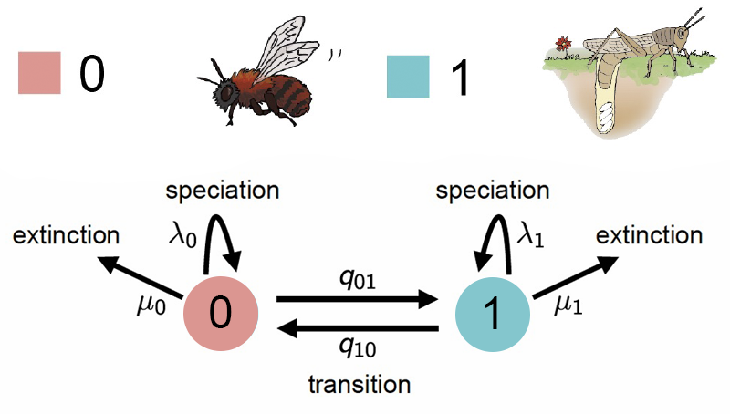
Las transiciones entre estados ocurren a tasas \(q_{01}\) (de abeja a saltamontes) y \(q_{10}\) (de saltamontes a abeja). Cada estado tiene su propia tasa de especiación (\(\lambda_0, \lambda_1\)) y extinción (\(\mu_0, \mu_1\)).
Matriz de tasas de transición (\(Q\))
La matriz de transición \(Q\) define la probabilidad de cambio entre estados en un tiempo infinitesimal:
Guarda los archivos en la carpeta correspondiente y verifica su ubicación antes de continuar.
Carga de la filogenia y los datos
Crea un script .Rev y copia el codigo de la siguiente sección:
# Leer el arbolT <-readTrees("../data/ConLyttini.tre")[1]# Leer la matriz de caracteresdatos <-readCharacterData("../data/Traits_conLyttini_01.nex")
Definir el número de estados en los modelos BISSE
NUM_STATES =2
Definir vectores para almacenar los movimientos de MCMC y los monitores de resultados.
moves =VectorMoves()monitors =VectorMonitors()
Valores de la log-normal
De acuerdo con Nee et al. (1994) el número esperado de linajes en la corona de un clado con n taxones bajo un proceso de nacimiento y muerte en el tiempo t es:
\((\lambda - \mu) = \frac{In(n)/2}{t}\)
En donde: n = es el número de especies y t = es la edad de la filogenia
# Definimos una a priori log normalrate_mean <-ln(ln(3000.0/2.0) /T.rootAge())# Con una varianza que es ampliarate_sd <-0.587405for (i in1:NUM_STATES) {# lognormales de las especiaciones log_speciation[i] ~dnNormal(mean=rate_mean, sd=rate_sd) speciation[i] :=exp(log_speciation[i])moves.append(mvSlide(log_speciation[i], delta=0.20, tune=true, weight=3.0))# lognormales de las extinciones log_extinction[i] ~dnNormal(mean=rate_mean, sd=rate_sd) extinction[i] :=exp(log_extinction[i])moves.append(mvSlide(log_extinction[i], delta=0.20, tune=true, weight=3.0))}
Definir la matriz de tasas de transición entre los estados del carácter
# Calcula la suma de todas las longitudes de las ramas del árbol filogenético# Dividido por 10: Esto asume que en promedio ocurren 10 cambios de estado a lo largo del árbolrate_pr :=T.treeLength() /10
Definición de las tasas de transición
# Tasa de transición de estado 1 → estado 2 rate_12 ~dnExp(rate_pr)# Tasa de transición de estado 2 → estado 1 rate_21 ~dnExp(rate_pr)# Definición de movimientos moves.append(mvScale(rate_12, weight=2))moves.append(mvScale(rate_21, weight=2))
¿Por qué usar una exponencial?
La distribución exponencial es adecuada para modelar tasas de transición porque impone la condición de que siempre sean positivas.
También asigna mayor probabilidad a valores pequeños, lo que significa que los cambios de estado no ocurren demasiado rápido.
library(tidyverse)library(RevGadgets)library(ggtree)# Cargar el archivo de estados ancestralesbisse_file <-paste0("../docs/u1_PatDiv/output/bisse/mitos_bisse_anc_states_results.tree")p_anc <-processAncStates(bisse_file)# Definir paleta de colores personalizadatraitcols <-c("#F29494", "#5FD9D9") # Generar el gráfico con estados plot <-plotAncStatesMAP(p_anc,tree_layout ="rect",tip_labels_size =1) +# Aplicar la paleta de coloresscale_color_manual(values = traitcols) +scale_fill_manual(values = traitcols) +# Modificar leyenda y otros elementos de ggplot2theme(legend.position =c(0.1, 0.85),legend.key.size =unit(0.3, 'cm'), # Tamaño de la clave de la leyendalegend.title =element_text(size =6), # Tamaño del título de la leyendalegend.text =element_text(size =4)) # Tamaño del texto de la leyenda# Mostrar el gráficoplot
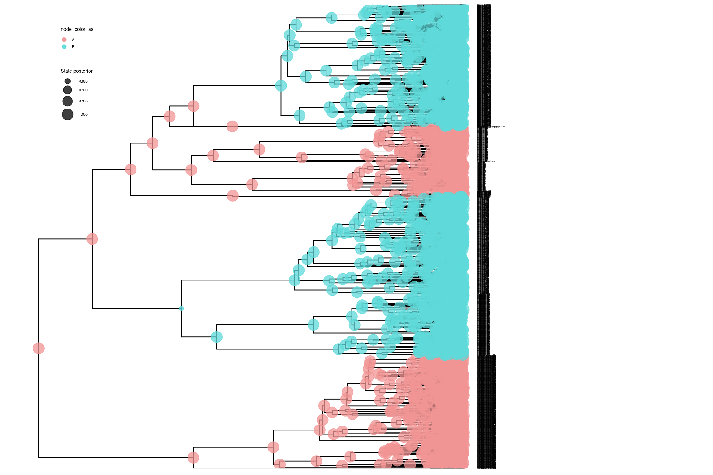
# Generar el gráfico con ramas coloreadas por estado ancestralplot_2 <-ggtree(p_anc, layout ="rectangular", aes(color = anc_state_1)) +scale_color_manual(name ="Estado", values = traitcols) +theme_minimal() +ggtitle("BISSE") +theme(legend.position =c(0.1, 0.85),legend.key.size =unit(0.3, 'cm'), # Tamaño de la clave de la leyendalegend.title =element_text(size =6), # Tamaño del título de la leyendalegend.text =element_text(size =4)) # Tamaño del texto de la leyenda# Mostrar el gráficoplot_2
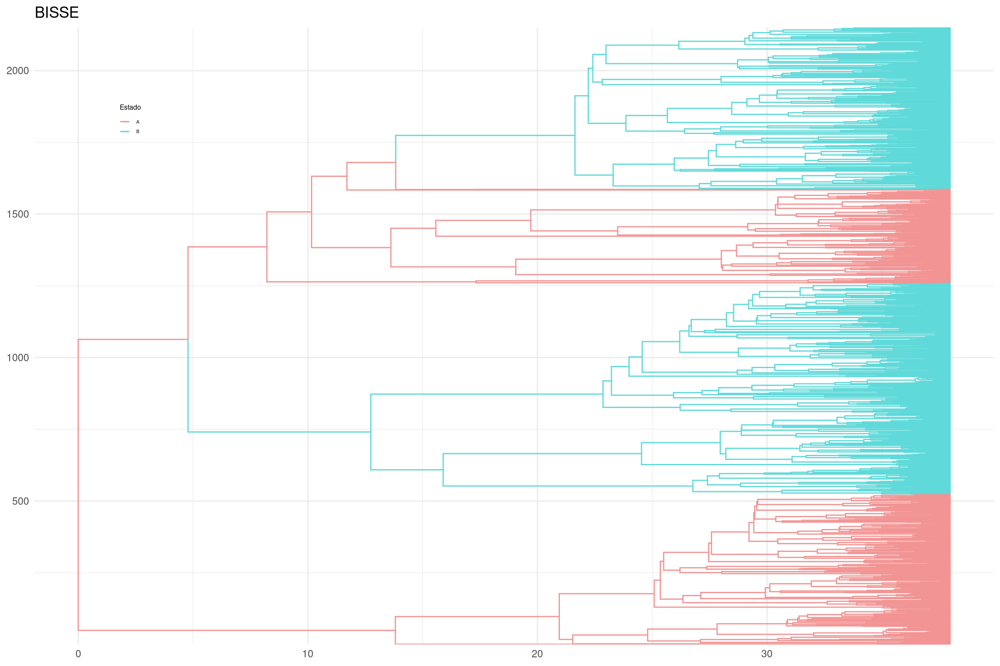
Graficar las tasas de transición
library(tidyverse)# Leer el archivo de salida de RevBayesbisse <-read.table("../docs/u1_PatDiv/output/bisse/mitos_BiSSE_clyttini.log", header =TRUE)# Definir colores para los estados 0 y 1traitcols <-c("#F29494", "#5FD9D9") # Crear un dataframe con solo las tasas de transicióntransition_rates <-data.frame(dens =c(bisse$rate_12, bisse$rate_21), rate =rep(c("0", "1"), each =length(bisse$rate_12)))# Crear un gráfico de violín para las tasas de transiciónviolin_transitions <-ggplot(transition_rates, aes(x = rate, y = dens, fill = rate)) +geom_violin(trim =FALSE) +labs(title ="Tasas de Transición", x ="Estado", y ="Tasa") +scale_fill_manual(name ="Estado", values = traitcols) +theme_classic()# Mostrar la gráficaviolin_transitions
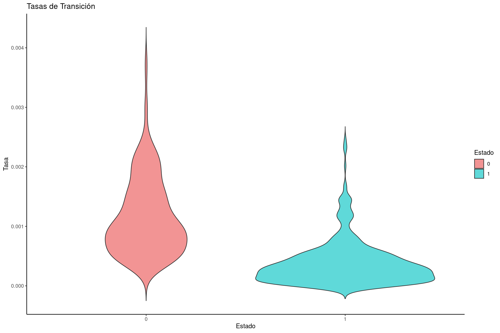
Graficar las tasas de diversificación neta
# Calcular la tasa de diversificación neta: especiación - extinciónnetdiversification_rates <-data.frame(dens =c(bisse$speciation.1.- bisse$extinction.1., bisse$speciation.2.- bisse$extinction.2.),rate =rep(c("0", "1"), each =length(bisse$speciation.1.)))# Convertir la variable de estado en factornetdiversification_rates$rate <-factor(netdiversification_rates$rate, levels =c("0", "1"))# Crear el gráfico de violín para tasas de diversificación netaviolin_diversification <-ggplot(netdiversification_rates, aes(x = rate, y = dens, fill = rate)) +geom_violin(trim =FALSE) +labs(title ="Tasas de Diversificación Neta", x ="Estado", y ="Tasa") +scale_fill_manual(name ="Estado", values = traitcols) +theme_classic()# Mostrar la gráficaviolin_diversification
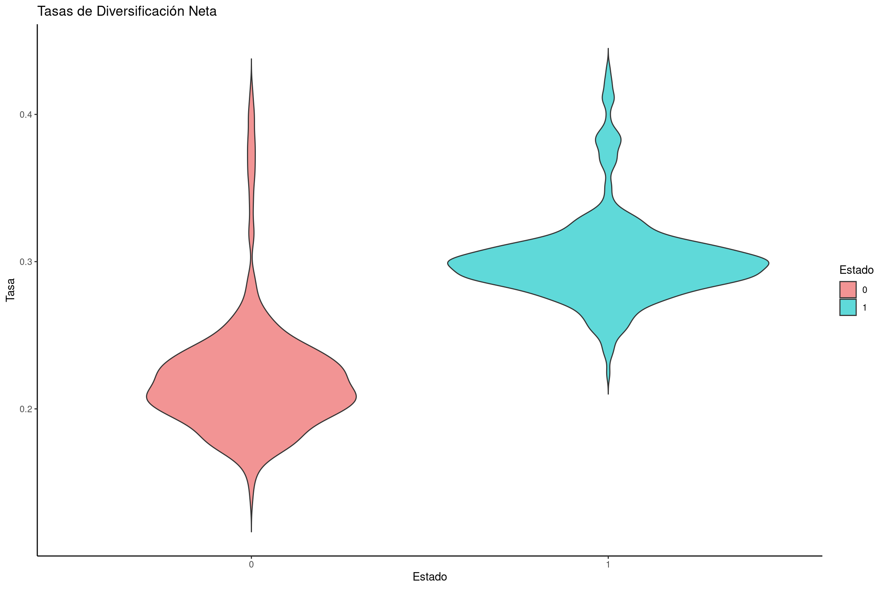
Graficar tasas de especiación
# Crear un dataframe con tasas de especiación para cada estadospeciation_rates <-data.frame(dens =c(bisse$speciation.1., bisse$speciation.2.), rate =rep(c("0", "1"), each =length(bisse$speciation.1.)))# Crear gráfico de violín para las tasas de especiaciónviolin_speciation <-ggplot(speciation_rates, aes(x = rate, y = dens, fill = rate)) +geom_violin(trim =FALSE) +labs(title ="Tasas de Especiación", x ="Estado", y ="Tasa de Especiación") +scale_fill_manual(name ="Estado", values = traitcols) +theme_classic()# Mostrar la gráficaviolin_speciation
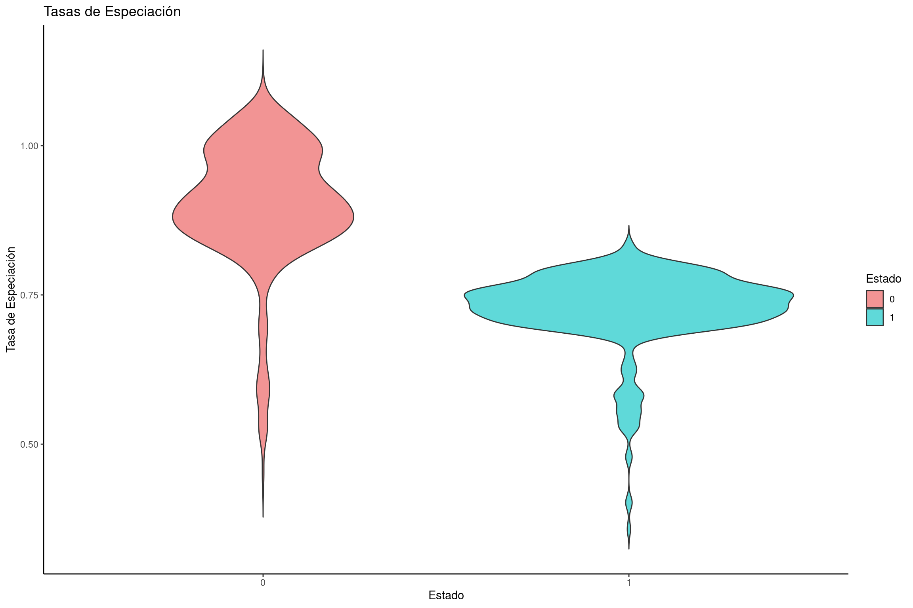
Graficar tasas de extinción
# Crear un dataframe con tasas de extinción para cada estadoextinction_rates <-data.frame(dens =c(bisse$extinction.1., bisse$extinction.2.), rate =rep(c("0", "1"), each =length(bisse$extinction.1.)))# Crear gráfico de violín para tasas de extinciónviolin_extinction <-ggplot(extinction_rates, aes(x = rate, y = dens, fill = rate)) +geom_violin(trim =FALSE) +labs(title ="Tasas de Extinción", x ="Estado", y ="Tasa de Extinción") +scale_fill_manual(name ="Estado", values = traitcols) +theme_classic()# Mostrar la gráficaviolin_extinction
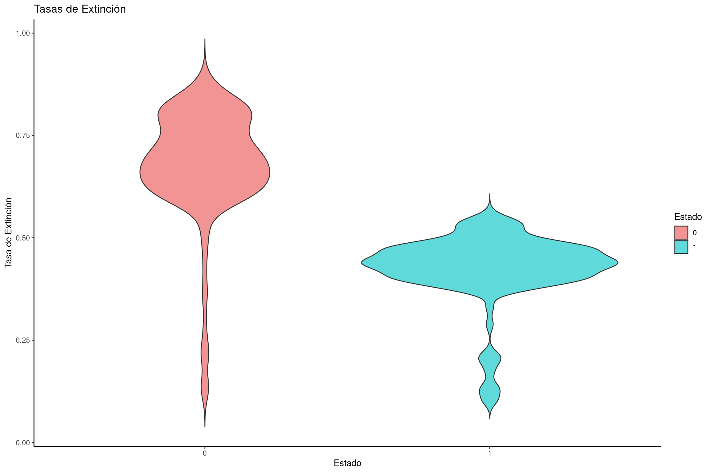
Modelo de diversificación con estados escondidos (HISSE)
Uno de los descubrimientos más importantes en el campo de los modelos de diversificación dependientes de estado (SSE) fue hecho por Rabosky y Goldberg (2015). Estos autores encontraron, que BiSSE generaba un elevado error tipo I. En estadística este error se refiere a rechazar la hipótesis nula cuando en general la hipótesis es verdadera.
Modelo HiSSE con dos estados y asociando a dos estados escondidos
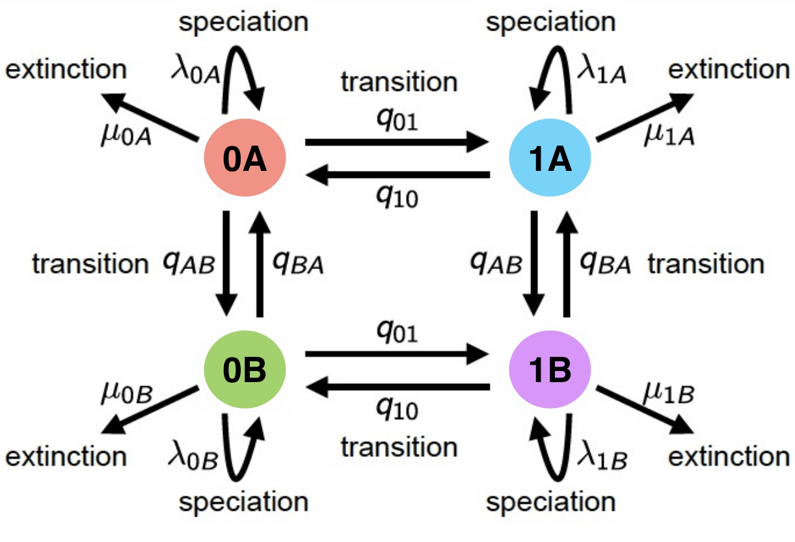
Si tenemos dos estados 0 y 1, estos se convierten ahora en cuatro estados 0A, 0B, 1A, 1B.
Para cada uno de los estados definimos una nueva tasa de especiación \(\lambda_{0A}\), \(\lambda_{0B}\), \(\lambda_{1A}\) y \(\lambda_{1B}\).
Para cada uno de los estados definimos una nueva tasa de extinción \(\mu_{0A}\), \(\mu_{0B}\), \(\mu_{1A}\) y \(\mu_{1B}\).
La matriz Q muestra cómo los estados observables y ocultos interactúan, ayudando a inferir cómo los cambios de carácter afectan la especiación y extinción.
Carga de la filogenia y los datos
Crea un script .Rev y copia el codigo de la siguiente sección:
# Leer el arbolT <-readTrees("../data/ConLyttini.tre")[1]# Leer la matriz de caracteresdatos <-readCharacterData("../data/Traits_conLyttini_01.nex")
Definir el número de estados en los modelos HISSE y paremetros globales
NUM_TOTAL_SPECIES =3000.0NUM_STATES =2NUM_HIDDEN =2NUM_RATES = NUM_STATES * NUM_HIDDENH =0.587405# Expansión de los Datos para Incluir Estados Ocultos data_exp <-datos.expandCharacters(NUM_HIDDEN)
Definir vectores para almacenar los movimientos de MCMC y los monitores de resultados.
moves =VectorMoves()monitors =VectorMonitors()
Extraer información del árbol filogenético
taxa <-T.taxa()tree_length <-T.treeLength()
Definir la Media de las Tasas de Especiación y Extinción
rate_mean <- (NUM_TOTAL_SPECIES -2) / tree_length
✅ Calcula la media esperada de las tasas de especiación y extinción basada en el número total de especies y la longitud del árbol.
Especiación y Extinción Oculta (Hidden Speciation Rates)
✅ Define la media logarítmica de las tasas ocultas de especiación como 1.0 en una escala relativa. ✔️ Esto significa que los valores generados serán proporcionales, y no absolutos.
Variación en las Tasas Ocultas de Especiación y Extinción
✅ Se normalizan las tasas ocultas dividiéndolas por su media, para que el promedio sea 1.0. ✔️ Esto garantiza que los valores sean relativos y comparables entre estados.
Definir Tasas de Especiación para Estados Observables
for (i in1:NUM_STATES) { speciation_observed[i] ~dnLoguniform( 1E-6, 1E2) speciation_observed[i].setValue( (NUM_TOTAL_SPECIES-2) / tree_length )moves.append( mvScale(speciation_observed[i], lambda=1.0, tune=true, weight=3.0) )### Create a loguniform distributed variable for the extinction rate extinction_observed[i] ~dnLoguniform( 1E-6, 1E2) extinction_observed[i].setValue( speciation_observed[i] /10.0 )moves.append( mvScale(extinction_observed[i], lambda=1.0, tune=true, weight=3.0) )}
Cálculo de las Tasas Combinadas
for (j in1:NUM_HIDDEN) {for (i in1:NUM_STATES) { index = i+(j*NUM_STATES)-NUM_STATES speciation[index] := speciation_observed[i] * speciation_hidden[j] extinction[index] := extinction_observed[i] * extinction_hidden[j] }}
Definir la Matriz de Transición entre Estados Observables
rootAge = root → La edad de la raíz se fija a la edad del árbol observado.
speciationRates = speciation → Tasas de especiación combinadas (λ), que incluyen efectos de los estados ocultos.
extinctionRates = extinction → Tasas de extinción combinadas (μ), modeladas de la misma manera.
Q = rate_matrix → Matriz de tasas de transición entre estados (0A ↔︎ 1A, 0B ↔︎ 1B, etc.).
delta = 1.0 → Modelo estándar en el que las tasas de diversificación dependen completamente del estado.
pi = rate_category_prior → Prior de las probabilidades de estado en la raíz.
rho = rho → Ajuste por sesgo de muestreo de especies.
condition = "survival" → Se modela solo en árboles que han sobrevivido hasta el presente.
Ajustar el Modelo a la Filogenia Observada
timetree.clamp(T)
Ajustar el Modelo a los Datos de Caracteres
timetree.clampCharData(data_exp)
Definir el Modelo en RevBayes
mymodel =model(rate_matrix)
Configurar Monitores para Guardar Resultados
# Monitor Principal del Modelomonitors.append( mnModel(filename="../out/Hisse/mitos_HiSSE_clyttini_TUTscript.log", printgen=1) )# Monitor de Estados Ancestralesmonitors.append(mnJointConditionalAncestralState(tree=timetree, cdbdp=timetree, type="NaturalNumbers", printgen=1, withTips=true, withStartStates=false, filename="../out/Hisse/anc_states_mitos_HiSSE_clyttini_TUTscript.log"))# Monitor de Mapeo Estocástico de Caracteresmonitors.append(mnStochasticCharacterMap(cdbdp=timetree, printgen=10, filename="../out/Hisse/stoch_char_map_mitos_HiSSE_clyttini_TUTscript.log", include_simmap=true))# Monitor en Pantallamonitors.append(mnScreen(printgen=10, speciation_observed, extinction_observed))
Definir Parámetros para la Resumir Estados Ancestrales
burnin=10n_time_slices =500
✅ burnin = 25 → Descarta las primeras 25 iteraciones del MCMC antes de hacer el resumen.
✅ n_time_slices = 500 → Divide el árbol en 500 segmentos de tiempo para interpolar los cambios de estado.
Leer la Historia del Carácter Inferida por Mapeo Estocástico
# Cargar el archivo de estados ancestraleshisse_file <-paste0("../docs/u1_PatDiv/output/hisse/anc_states_mitos_HiSSE_clyttini_TUTscript.tree")p_anc_hisse <-processAncStates(hisse_file)# Definir paleta de colores personalizadatraitcols <-c("#F29494", "#5FD9D9", "#9DD962", "#D48DF2") # Rojo para estado 0, azul para estado 1# Generar el gráfico con estados ancestralesplot_hisse <-plotAncStatesMAP(p_anc_hisse,tree_layout ="rect",tip_labels_size =1) +# Aplicar la paleta de coloresscale_color_manual(values = traitcols) +scale_fill_manual(values = traitcols) +# Modificar leyenda y otros elementos de ggplot2theme(legend.position =c(0.1, 0.85),legend.key.size =unit(0.3, 'cm'), # Tamaño de la clave de la leyendalegend.title =element_text(size =6), # Tamaño del título de la leyendalegend.text =element_text(size =4)) # Tamaño del texto de la leyenda# Mostrar el gráficoplot_hisse
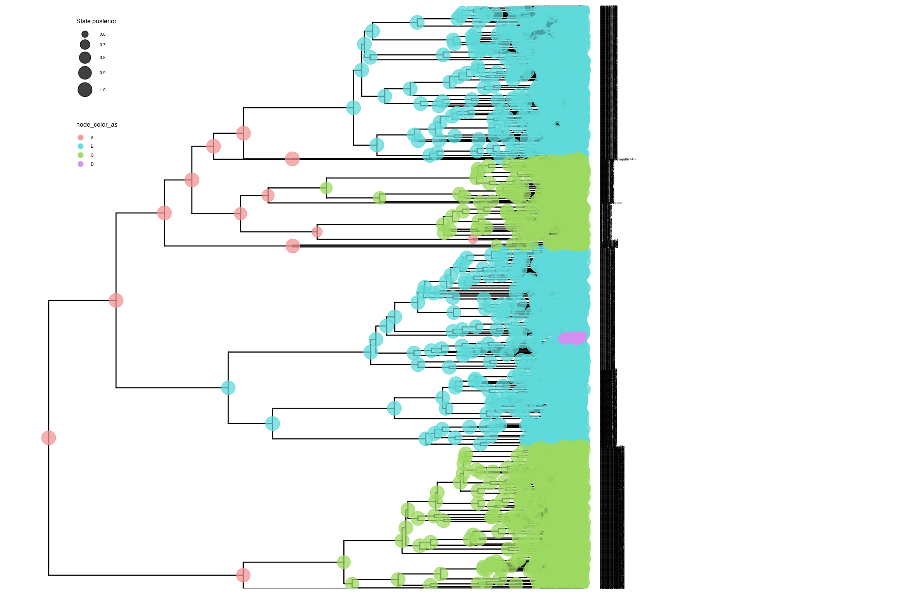
# Generar el gráfico con ramas coloreadas por estado ancestralplot_hisse_2 <-ggtree(p_anc_hisse, layout ="rectangular", aes(color = anc_state_1)) +scale_color_manual(name ="Estado", values = traitcols) +theme_minimal() +ggtitle("HISSE") +theme(legend.position =c(0.1, 0.85),legend.key.size =unit(0.3, 'cm'), # Tamaño de la clave de la leyendalegend.title =element_text(size =6), # Tamaño del título de la leyendalegend.text =element_text(size =4)) # Tamaño del texto de la leyenda# Mostrar el gráficoplot_hisse_2
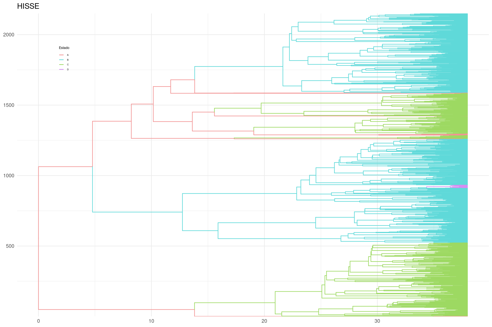
Graficar las tasas de diversificación neta
# Leer el archivo de salida de RevBayeshisse <-read.table("../docs/u1_PatDiv/output/hisse/mitos_HiSSE_clyttini_TUTscript.log", header =TRUE)# Definir paleta de colores personalizadatraitcols <-c("#F29494", "#5FD9D9", "#9DD962", "#D48DF2") # Rojo para estado 0, azul para estado 1# Calcular la tasa de diversificación neta: especiación - extinciónnetdiversification_rates <-data.frame(dens =c(hisse$speciation_observed.1.- hisse$extinction_observed.1., hisse$speciation_observed.2.- hisse$extinction_observed.2., hisse$speciation_hidden.1.- hisse$extinction_hidden.1., hisse$speciation_hidden.2.- hisse$extinction_hidden.2.),rate =rep(c("0A", "1A", "0B", "1B"), each =length(hisse$speciation_observed.1.)) )# Convertir la variable de estado en factornetdiversification_rates$rate <-factor(netdiversification_rates$rate, levels =c("0A", "1A", "0B", "1B"))# Crear el gráfico de violín para tasas de diversificación netaviolin_diversification <-ggplot(netdiversification_rates, aes(x = rate, y = dens, fill = rate)) +geom_violin(trim =FALSE) +labs(title ="Tasas de Diversificación Neta", x ="Estado", y ="Tasa") +scale_fill_manual(name ="Estado", values = traitcols) +theme_classic()# Mostrar la gráficaviolin_diversification
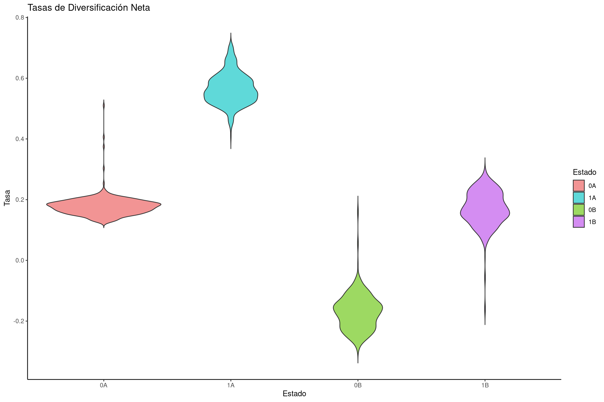
Graficar tasas de especiación
# Crear un dataframe con tasas de especiación para cada estadospeciation_rates <-data.frame(dens =c(hisse$speciation_observed.1., hisse$speciation_observed.2., hisse$speciation_hidden.1., hisse$speciation_hidden.2.), rate =rep(c("0A", "1A", "0B", "1B"), each =length(hisse$speciation_observed.1.)))# Crear gráfico de violín para las tasas de especiaciónviolin_speciation <-ggplot(speciation_rates, aes(x = rate, y = dens, fill = rate)) +geom_violin(trim =FALSE) +labs(title ="Tasas de Especiación", x ="Estado", y ="Tasa de Especiación") +scale_fill_manual(name ="Estado", values = traitcols) +theme_classic()# Mostrar la gráficaviolin_speciation
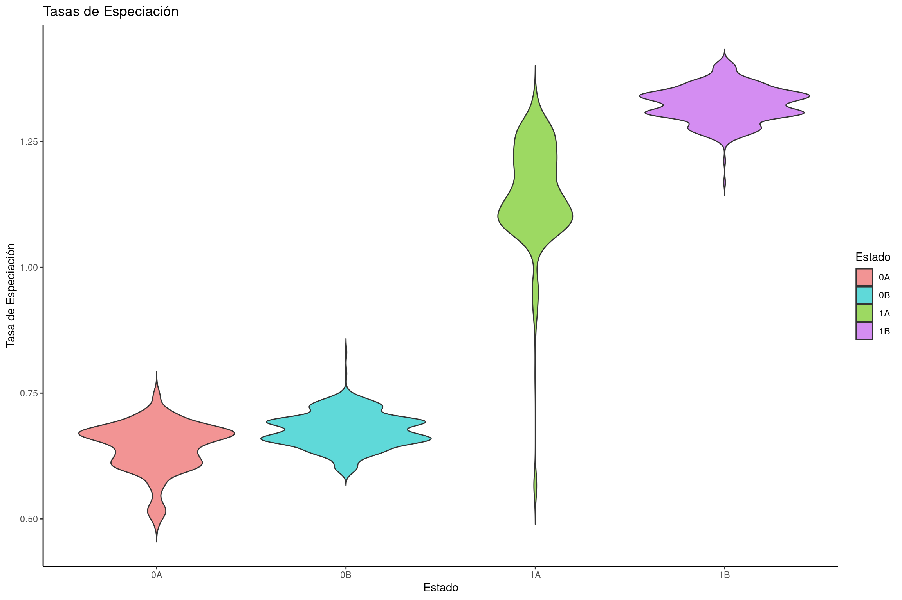
Graficar tasas de extinción
# Crear un dataframe con tasas de extinción para cada estadoextinction_rates <-data.frame(dens =c(hisse$extinction_observed.1., hisse$extinction_observed.2., hisse$extinction_hidden.1., hisse$extinction_hidden.2.), rate =rep(c("0A", "1A", "0B", "1B"), each =length(hisse$extinction_observed.1.)))# Crear gráfico de violín para tasas de extinciónviolin_extinction <-ggplot(extinction_rates, aes(x = rate, y = dens, fill = rate)) +geom_violin(trim =FALSE) +labs(title ="Tasas de Extinción", x ="Estado", y ="Tasa de Extinción") +scale_fill_manual(name ="Estado", values = traitcols) +theme_classic()# Mostrar la gráficaviolin_extinction